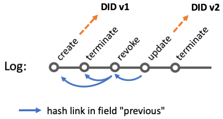
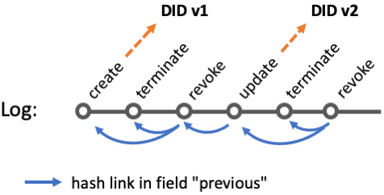
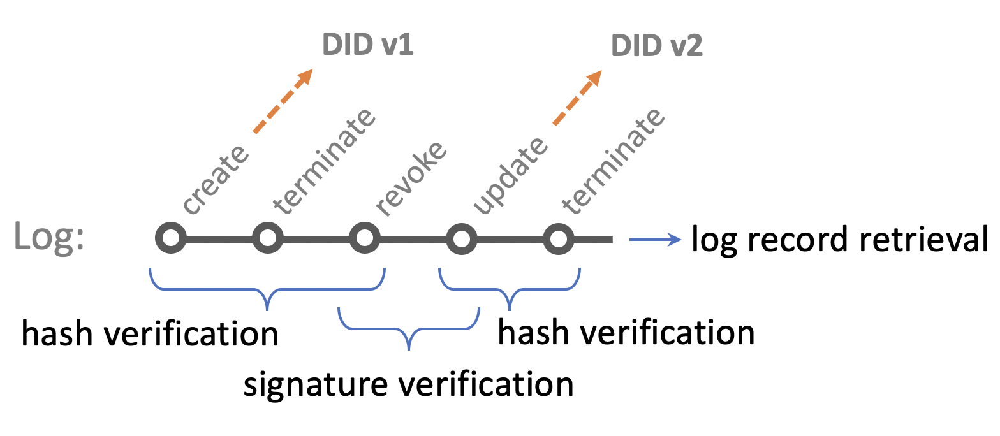

This specification is not a W3C Standard nor is it on the W3C Standards Track. Learn more about W3C Community and Business Groups. GitHub Issues are preferred for discussion of this specification.
History
-
Version 0.3: 19 October 2021 (initial public release, link)
-
Version 0.4: 19 January 2022 (current version, link)
1. Introduction
Decentralized Identifiers (DIDs) [DID-CORE] are a new type of identifier for verifiable, decentralized digital identity. These new identifiers are designed to enable the controller of a DID to prove control over it and to be implemented independently of any centralized registry, identity provider, or certificate authority. These sorts of identifiers often utilize a heavy-weight registry, such as ones utilizing Decentralized Ledger Technologies (DLT), to create, read, update, and deactivate DIDs.
While DLT-based DID Methods have great decentralization characteristics, and some of the more centralized DID Methods provide strong system control guarantees, the general approaches tend to be expensive to set up and operate. OYDID takes the approach to not maintain DID and DID Document on a public ledger but on one or more local storages (that might be publicly available). Through cryptographically linking the DID Identifier to the DID Document, and furthermore linking the DID Document to a chained provenance trail the same security and validation properties as a traditional DID can be maintained while avoiding highly redundant storage and also works in settings without general public access.
The rest of this document outlines the syntax for the did:oyd method, the operations it supports, and some security and privacy considerations as well as ehtical aspects that implementers might want to be aware of when using this DID method.
2. The did:oyd Format
The format for the did:oyd method conforms to the DID core specification [DID-CORE] as outlined by W3C. It consists of the did:oyd prefix, followed by a Multibase [MULTIBASE] (default: base58-btc) encoded value that is a Multihash [MULTIHASH] (default: sha2-256) value of composed of information from the payload, keys, and log.
The detailed calculation of the DID identifier from the internal document and log information via ABNF is described here:
; !syntax("abnf") did-oyd-format = "did:oyd:" identifier identifier = MULTIBASE ( base-identifier did-information-hash ) did-information-hash = MULTIHASH ( hash-identifier did-canoncial-information ) did-canonical-information = <create JSON canonicla representation according to RFC 8785 from did-information >did-information = "{doc:" payload ",key:" key-value ",log:" log-value "}" payload = <json-grammar-rules >key-value = public-doc-key-encoded ":" public-revocation-key-encoded log-value = termination-hash-encoded public-doc-key-encoded = MULTIBASE ( base-identifier public-doc-key-codec ) public-doc-key-codec = MULTICODEC ( codec-identifier public-doc-key ) public-doc-key = <public key from key pair used for verifying payload >public-revocation-key-encoded = MULTIBASE ( base-identifier public-revocation-key-codec ) public-revocation-key-codec = MULTICODEC ( codec-identifier public-revocation-key ) public-revocation-key = <public key from key pair used for verifying revocations >termination-hash-encoded = MULTIBASE ( base-identifier termination-log-entry-hash ) termination-log-entry-hash = MULTIHASH ( hash-identifier termination-canonical-log-entry ) termination-canonical-log-entry = <create JSON canonicla representation according to RFC 8785 from termination-log-entry >termination-log-entry = "{op:" DIGIT ",ts:" DIGIT ",doc:" revoke-encoded ",sig:" sig-revoke-encoded ",previous: []}" revoke-encoded = MULTIBASE ( base-identifier revoke-hash ) revoke-hash = MULTIHASH ( hash-identifier sub-revocation-canonical-log-entry ) sub-revocation-canonical-log-entry = <create JSON canonicla representation according to RFC 8785 from sub-revocation-log-entry >sub-revocation-log-entry = "{op:" DIGIT ", ts:" DIGIT ", doc:" sub-doc-encoded ", sig:" sig-sub-doc-encoded "}" sig-revoke-encoded = MULTIBASE ( base-identifier sig-revoke ) sig-revoke = <signed revoke-encoded with private key corresponding to public-revocation-key in payload >sub-doc-encoded = MULTIBASE ( base-identifier sub-doc-hash ) sub-doc-hash = MULTIHASH ( hash-identifier sub-doc-canonical ) sub-doc-canonical = <create JSON canonicla representation according to RFC 8785 from sub-doc >sub-doc = "{doc:" payload ",key:" key-value "}" sig-sub-doc-encoded = MULTIBASE ( base-identifier sig-sub-doc ) sig-sub-doc = <sign sub-doc-encoded with private key corresponding to public-doc-key in payload >base-identifier = DEFAULT base58btc hash-identifier = DEFAULT sha2-256 codec-identifier = DEFAULT ed25519-pub
3. DID Operations
The following section outlines the DID operations for the did:oyd method.
3.1. Create (Register)
Creating a did:oyd identifier requires
-
a payload (e.g., service endpoints) as JSON document and
-
two cryptographic key pairs (default: ED25519)
in the format described in Section § 2 The did:oyd Format.
The DID document and associated log entries are stored in a registry accessible by relevant stakeholders. An example is given below (EXAMPLE 1) listing a payload, internal and W3C conform DID document, log entries, private keys, and private revocation document.
-
DID
-
Payload
-
Internal DID document
-
W3C conform DID document
-
Log entries
-
Private doc key
-
Private revocation key
-
Private revocation document
DID: did:oyd:zQmNXp9zTLQECaLwWcXy4ctdKctnPLghHWftwdJsfGd8Erz
Payload:
{
"foo": "bar"
}
Internal DID document:
{
"doc": {
"foo": "bar"
},
"key": "z6MusWcRn7TWW3XAa96vrST5Fx8n3xndSEVEfMCQBDAMrQpP:z6Mv1rQ3ZTsLwfV8neZ1zKp17NHeb1Xv3KK5EB4D8t5mxJ3V",
"log": "zQmSkagv16yPWiLAsUXRX5RKmejXuHTMTNodZewXpFCFYvj"
}
W3C conform DID document:
{
"@context": "https://www.w3.org/ns/did/v1",
"id": "did:oyd:zQmNXp9zTLQECaLwWcXy4ctdKctnPLghHWftwdJsfGd8Erz",
"verificationMethod": [
{
"id": "did:oyd:zQmNXp9zTLQECaLwWcXy4ctdKctnPLghHWftwdJsfGd8Erz",
"type": "Ed25519VerificationKey2020",
"controller": "did:oyd:zQmNXp9zTLQECaLwWcXy4ctdKctnPLghHWftwdJsfGd8Erz",
"publicKeyBase58": "z6MusWcRn7TWW3XAa96vrST5Fx8n3xndSEVEfMCQBDAMrQpP"
}
],
"keyAgreement": [
{
"id": "did:oyd:zQmNXp9zTLQECaLwWcXy4ctdKctnPLghHWftwdJsfGd8Erz",
"type": "Ed25519VerificationKey2020",
"controller": "did:oyd:zQmNXp9zTLQECaLwWcXy4ctdKctnPLghHWftwdJsfGd8Erz",
"publicKeyBase58": "z6Mv1rQ3ZTsLwfV8neZ1zKp17NHeb1Xv3KK5EB4D8t5mxJ3V"
}
],
"service": [
{
"foo": "bar"
}
]
}
Log entries:
[
{
"ts": 1641122585,
"op": 2,
"doc": "zQmNXp9zTLQECaLwWcXy4ctdKctnPLghHWftwdJsfGd8Erz",
"sig": "z2BQRPP8e26kFRXoQxBB2ERFZgFVu1Eov7VdTjt9diSipRxWnx8rm4knHMsdERteE7Ry66GkVmp9Ghnp9d5cigA26",
"previous": []
},
{
"ts": 1641122585,
"op": 0,
"doc": "zQmeugQwCyHSdSQPbPBYmMV4qhitnJ6m4ZHTvH4GJZN3SRh",
"sig": "zYo8FztfFvRpctfifYjgL4uswEMWagRELDqBpwMvMjLBR5dfsL4WzZc3hmG4HVKp6dhmVy4dGbfGot5kYLV2LgD9",
"previous": []
}
]
Private doc key: z1S5YqYg92n7q9g581jNsiMs7mwLzPtZ6tzBZTGNCwxxj2Hf
Private revocation key: z1S5WvZDDNAGQEnjSET1NA7MuMdVGZ12ZW2SqED5dxcLbLt8
Private revocation document:
{
"ts": 1641122585,
"op": 1,
"doc": "zQmQ8pDd2gkWAu5tNpm9JtMBpPZ9eYSwKycobTVVszjdoMc",
"sig": "z5ZbPS243WSimHJzVigJ9Bb3AKn6DtHTXHaAc13X7uUVFpbhgmCSp8v9vZXScj9zJP4sdouip6KckSM3P26Nw3p2"
}
3.2. Read (Resolve)
Reading a did:oyd is a matter of searching for a DID document that either can be directly linked (through hashing and encoding) to the provided identifier or through traversing through the log to unambiguously link the provided identifier to the latest version of the DID document. Cryptographic proof for the link between DID Identifier and DID Document, ownership, and completeness is performed in the following steps (here the example for a newly created DID without any updates so far):
-
the identifier is the encoded hash value of the internal DID document (the hashing algorithm is encoded in the identifier using MULTIHASH, default:
SHA2-256, the encoding algorithm is also encoded in the identifier using MULTIBASE, default:base58-btc) -
the DID document includes public keys (encoded with MULTIBASE, default:
base58-btcand specified with MULTICODECS, default:ed25519-pub) and the hash value of a DID log entry (the hashing algorithm is encoded in the identifier using MULTIHASH, default:SHA2-256, the encoding algorithm is also encoded in the identifier using MULTIBASE, default:base58-btc) -
the log entry (create, op=2) for the DID document provides a signature ("sig" - encoded with MULTIBASE, default:
base58-btc) of the identifier ("doc") to prove possession of the private key, i.e., use the public payload key in the DID document to verify this signature -
the other log entry (terminate, op=0) provides revocation info; in case a log entry with the stated hash in doc exists the DID resolving process must continue
An example is given below (EXAMPLE 2) depicting the log entries to be evaluated for linking an old DID identifier (DID v1) to the content of DID v2.

Figure 1: Visualization of log entries
Process:
-
User wants to resolves DID v1 and queries an OYDID registry with identifier
-
OYDID registry responds with (outdated) DID document for DID v1 and log entries "create" and "terminate" (shown on the very left in the picture above)
-
Resolver (automatically) queries the OYDID registry for a revocation log entry with the hash stored in the terminate entry
-
OYDID repository returns revoke entry
-
Resolver (automatically) queries the OYDID registry for log entries that hold the hash value of the revoke entry
-
OYDID repository must retrieve exactly one update entry (and associated terminate entry) plus associated DID document (DID v2) as linked by the update entry
-
Resolver validates linked hash entries and queries again OYDID registry for a revocation log entry from the second terminate entry (shown on the very right in the picture above)
-
OYDID repository finds no information of such a revocation entry and therefore the resolver can return DID v2 as the latest document
Note: it is in the interest of the owner to publish revocation entries and make those easily accessible to ensure that even outdated DID identifier resolve to the latest DID document
Note: see section § 4.2 Verification Steps for a detailed description of using the OYDID command line tool to output step-wise verification information for independent proof.
3.3. Update
Updating in did:oyd is providing a new DID document and/or new keys for key rotation while also publishing the revocation document and signing with original keys to prove ownership. An example is given below (EXAMPLE 3) of all log entries for an updated DID.
[{
"ts": 1633300869,
"op": 2,
"doc": "zQmdxfGRfFEnLoJ9RTiyzG9TPBhK7q6zsqrGFVzuxVPv4dq",
"sig": "ziY1pSb9irVMykHotX1UDsNXP8V6iF4REVqfk2trQP9rtooAKcMkXHgjz8VTC3FEDTjKk6D2Z3ywLer1i9NKaLo4",
"previous": []
}, {
"ts": 1633300869,
"op": 0,
"doc": "zQmVnLPgFYYNf4GEzzD3gLbSR4xhpdk7dU4BWQR4pJr7R4Z",
"sig": "z2gJqK2bGP5VfZdCVijBeuUtzxiNaZm4NNMH6zm4EVG2LD4rqZg62c5craaQwEPEjxSbgjH4kE79DPwddghiNjirk",
"previous": []
}, {
"ts": 1633300869,
"op": 1,
"doc": "zQmVYqZoGSncYGybUnZi514niKgju68B6AVp7KJAdVifsYU",
"sig": "z461mfYfCvLvkeeN9vdd1yNoqFBpKAwFHD1xLRQUb4evBwEXCJLZXT9qcfQo54VTrr3eow3mJHZ3aGa7inuP29ZXg",
"previous": ["zQmVDzKVeyj4k8RYWHtKdML6MXUZX8Lu4LiiS46SfhQkZfG",
"zQmSjHywvbeHV1JzsLwexzXS9246vzHkyBUkwSbXDH5f1gg"]
}, {
"ts": 1633300910,
"op": 3,
"doc": "zQmNUV1MJ5xKkFm6Lc9EKqAauGzbKP7amvbyxsx79mKwqPB",
"sig": "z2UMg3AhegwzuMgrJ1bTRDyu9W9Kp8G7ERZi2Kin3JG8UhwJqf1yivNEYY5JvB9aPDfH8GEEw9Mbvscqhk1LJH8cp",
"previous": ["zQmetSQY5UZd91ubdWyQTh2gqVuKwkUVtjamh33p7spaYVR"]
}, {
"ts": 1633300910,
"op": 0,
"doc": "zQmQTdAmqxuQQB2yBj4qZoS4ooNUnL7PzwUydEepDqjJHd4",
"sig": "z5Bh8VwnUUQzFruVJosySBDfJJy5CRADbpYHjNH2qFjcCx71J6QJxttVhfnh7ZgfZpir9ghsNk24g3vRrDkvhR3jZ",
"previous": []
}]
3.4. Deactivate
Deactivating an OYDID is simply done by publishing the private revocation entry without providing any update record. The figure below depicts the log representing a deactivated DID.

Figure 3: Visualization of log graph for a deactivated DID
4. DID Log
The log is a directed acyclic graph (DAG) and represents the life cycle of a DID. Each element in this graph holds the following attributes:
{ "ts" : int , "op" : int , "doc" : str in g (hash), "sig" : str in g (signature of hash), "previous" : [ array of str in gs (hashes)] }
4.1. Log Operations
The following list describes all available log operations (op) and specific use of attributes:
-
Terminate (
op=0): confirms last entry until revoke entry is published
doc: hash of revoke entry
sig: doc signed by private document key
previous: can reference Clone or Delegate log entries for confirmation -
Revoke (
op=1): invalidates a Terminate log entry; only published for new information
doc: hash of doc and key in DID Document
sig: doc signed by private revocation key
previous: can reference "Create" or "Update" and always "Terminate" -
Create (
op=2): start new DID
doc: hash of DID Document
sig: doc signed by private document key
previous: has only a reference when created using clone pointing to this clone entry -
Update (
op=3): update DID
doc: hash of DID Document
sig: doc signed by private document key from previous version DID version
previous: reference previous revoke log entry -
Clone (
op=4): create linked DID with same "doc" but new keys and logs
doc: hash of new DID Document (same payload but different keys and logs)
sig: doc signed by the new private document key
previous: reference Create or Update log entry
4.2. Verification Steps
Processing the log provides unambiguous evidence for authenticity, correctness, and timeliness of resolving a DID to the DID document. This section describes all operations to perform independent verification when resolving a DID.

Figure 4: Types of verification
Resolving a DID requires 3 different types of verifications as depicted in Figure 4:
-
Hash Verifiction: within a DID version (e.g., DID v1 or DID v2 in the figure above) all associated log entries and the identifier are linked through hash values for a given JSON object
-
Signature Verification: between 2 DID versions authenticity is proven throuogh signing the new log entry with the private key from the previous version (the update log record in the figure above is signed with the primary key from DIV v1)
-
Log Record Retrieval: hash and signature verification in an untrusted repository guarantee imutability and it is up to the DID owner to ensure that DID documents and log records are publicly available
The following sub-sections describes those verification methods in detail.
Note: Use the --show-verification flag in the [oydid command line utility](https://github.com/OwnYourData/oydid/tree/main/cli) to retrieve raw data for performing verification. EXAMPLE 4 is the output of such a verification.
oydid read --show-verification did:oyd:zQmYhESMRSvN9BkrCf7YcBfxNzigVphyBUbFMfJpEm1fdPF
identifier: zQmYhESMRSvN9BkrCf7YcBfxNzigVphyBUbFMfJpEm1fdPF
✅ is hash of DID Document:
{
"doc": [
"payload"
],
"key": "z6Mv8rFnUqnHArmaGJCHTxBCtM7GcNXpi8DWWKN1qEbeWdvP:z6MuztHorNR1h7Ds79sYsxeFF7vSu7eFcLdYsU99qyJPWJyB",
"log": "zQmYmirw77JK4SX34zwmjgjE3F8BXnsDoBuPPbgjSQNcnZN"
}
(Details: https://ownyourdata.github.io/oydid/#calculate_hash)
'log' reference in DID Document: zQmYmirw77JK4SX34zwmjgjE3F8BXnsDoBuPPbgjSQNcnZN
✅ is hash of TERMINATE log record:
{
"ts": 1641208742,
"op": 0,
"doc": "zQmW3EpDiEmDnk2epFQ2t8hXuygmivW2LJDZyUn3v9G4pj2",
"sig": "z4Fq84y8Mg1Z52A5XUXdHES5fzGwBEGVTP6Nx2gz1Zvy7XuA8UH77f7wP7g7Dh2WtbAW2oThg2VmZSN5YySytNiGj",
"previous": [
]
}
(Details: https://ownyourdata.github.io/oydid/#calculate_hash)
'doc' reference in TERMINATE log record: zQmW3EpDiEmDnk2epFQ2t8hXuygmivW2LJDZyUn3v9G4pj2
✅ is hash of REVOCATION log record (without 'previous' attribute):
{
"ts": 1641208742,
"op": 1,
"doc": "zQmSswGSXLgjqBZ9f2RdRkK4AQvJEpxXVCNQNoGYr2grpmZ",
"sig": "z2umhsnyM27JyLf3k15JyhPKh7ctKWZLgajrc7wWNJtjwUgrswoGkmVqFAyLbM8GfNDB6xHNLf1mo6rNMtDHSGc8V",
"previous": [
"zQmbcKwoqHbNBwNduTGFdsFb4MCLFayBNxdC6x5qUTVwKU8",
"zQmYmirw77JK4SX34zwmjgjE3F8BXnsDoBuPPbgjSQNcnZN"
]
}
(Details: https://ownyourdata.github.io/oydid/#calculate_hash)
found UPDATE log record:
{
"ts": 1641208760,
"op": 3,
"doc": "zQmfDsSChwWjAxz8FYXXjJCdUqq9ZiUCtBiXnZVGUTGku72",
"sig": "zCQKpYAK1erKjqVwPExRCzBQkxHTbvaKkq9FAo4zD5JXgmzZJz6UVKSYVJvk43vmkaYcZ38eesEG5YUZ2f5pzr8q",
"previous": [
"zQmW8MKzWJ3dSfRgVqaq2PYQEksnry1BBocaXhxtfRf1jjv"
]
}
✅ public key from last DID Document: z6Mv8rFnUqnHArmaGJCHTxBCtM7GcNXpi8DWWKN1qEbeWdvP
verifies 'doc' reference of new DID Document: zQmfDsSChwWjAxz8FYXXjJCdUqq9ZiUCtBiXnZVGUTGku72
zCQKpYAK1erKjqVwPExRCzBQkxHTbvaKkq9FAo4zD5JXgmzZJz6UVKSYVJvk43vmkaYcZ38eesEG5YUZ2f5pzr8q
of next DID Document (Details: https://ownyourdata.github.io/oydid/#verify_signature)
identifier: zQmfDsSChwWjAxz8FYXXjJCdUqq9ZiUCtBiXnZVGUTGku72
✅ is hash of DID Document:
{
"doc": [
"new payload"
],
"key": "z6Muztkm7Nrf6uEPCPhe5Cu1vL4NfXJwaCKxWd5tgHbvk6qm:z6Mv1Zdz5SqYx94YmG7UrpPVSXNQSJKCMBanHvLx1SdPUgfH",
"log": "zQmaRxpQFsvP9i1ZyZhT5X4V2h7pNqZ4an7vgwpwK3yW7x8"
}
(Details: https://ownyourdata.github.io/oydid/#calculate_hash)
'log' reference in DID Document: zQmaRxpQFsvP9i1ZyZhT5X4V2h7pNqZ4an7vgwpwK3yW7x8
✅ is hash of TERMINATE log record:
{
"ts": 1641208760,
"op": 0,
"doc": "zQmdAyJZ3P1LEn8Ldc8fwGC3jv2fT9r2tRjmU2wZfmJS2Zo",
"sig": "z5HGPMqoi83q5GvGQjr2c2xRvqJJGtpxEjpNtGjCUixGWV8tbeKg7sBGdp1qsZYfKNFhFxfQnG67NRoraVsEMi8DL",
"previous": [
]
}
(Details: https://ownyourdata.github.io/oydid/#calculate_hash)
Revocation reference in log record: zQmdAyJZ3P1LEn8Ldc8fwGC3jv2fT9r2tRjmU2wZfmJS2Zo
✅ cannot find revocation record searching at
- https://oydid.ownyourdata.eu
(Details: https://ownyourdata.github.io/oydid/#retrieve_log)
=== end of verification output ===
{"doc":["new payload"],"key":"z6Muztkm7Nrf6uEPCPhe5Cu1vL4NfXJwaCKxWd5tgHbvk6qm:z6Mv1Zdz5SqYx94YmG7UrpPVSXNQSJKCMBanHvLx1SdPUgfH","log":"zQmaRxpQFsvP9i1ZyZhT5X4V2h7pNqZ4an7vgwpwK3yW7x8"}
4.2.1. Hash value calculation
Perform the following steps to verify that a hash value conforms to a message:
-
identify encoding algorithm in multibase string (first character)
you can use the information here: https://github.com/multiformats/multibase
example: if the string starts with "z" it is base58btc-encoding -
identify hashing algorithm in multibase string (second & third character)
you can use the information here: https://github.com/multiformats/multicodec#multicodec-table
example: if the string starts with "zQm" it is the sha2-256 hash algorithm -
if the message is a JSON is must be transformed to its canonical form based on this standard: https://datatracker.ietf.org/doc/html/rfc8785
-
calculate hash value from message (check if pre-processing step #3 applies!) using the algorithm from step #2
-
encode hash value using encoding algorithm from step #1
✅ This verification step passes iif presented hash value and message match.
4.2.2. Signature verification
Perform the following steps to verify the signature in a log record:
-
collect necesary artefacts for verification
-
payload to sign: this is the
docattribute in a log record; make sure to check that this is the correct hash value of the referenced document/record using § 4.2.1 Hash value calculation -
signature: this is the
sigattribute in a log record -
public key used for verification: this is provided in the corresponding DID Document; for UPDATE log records it must be the
public-doc-keyof the old DID Document to proof original ownership
-
-
identify cryptographic algorithm in multibase encoded string of
key
you can use the information here: https://github.com/multiformats/multicodec#multicodec-table
example: if the string start with "z6M" it is an Ed25519 public key -
use the public key to verify the validity of the payload’s signature; adhere to the respective encodings for each attribute
✅ This verification step passes iif payload’s signature is valid.
4.2.3. Log record retrieval
Perform the following steps to retrieve a log record:
-
identify location and type of a repository for storing DID Documents and DID Log records:
-
location is indicted with
@at the end of an identifier; if no location is specified the default online repository athttps://oydid.ownyourdata.euis used -
type "online repository" (indicated by an URL) with Swagger API documentation
-
type "file storage" (indicatred by the identifier
local) uses the local working directory
-
-
based on repository type retrieve log information:
-
online: via
http(s):HOST/log/{:id} -
file storage: use the file named
{:did_identifer}.log
Log records are an array of JSON objects in the format described in § 4 DID Log
-
-
calculate the hash value for a record according to § 4.2.1 Hash value calculation and compare it to the reference
✅ This verification step passes if a reference can be established.
Note: For TERMINATE log records the reference to a REVOKE record indicates if there are updates available. Being unable to find a REVOKE record with a given hash indicates that the DID resolve process successfully completes.
5. Test Vectors
5.1. Samples
This section provides samples of typical OYDID DIDs.
did:oyd:zQmdXNRiMWEYTiYF58a9BaiUkfB2xWUgL7G7ozyCCNPqjKV
did:oyd:zQmeArtmfxJ1JB6CXvoFdcQCyxPcYii5DUTBR44g4xYpCLR
did:oyd:zQmNauTUUdkpi5TcrTZ2524SKM8dJAzuuw4xfW13iHrtY1W@did2.data-container.net
Note: a W3C conform representation is the percent-encoded @did:oyd:zQmNauTUUdkpi5TcrTZ2524SKM8dJAzuuw4xfW13iHrtY1W%40did2.data-container.net
5.2. Command line tool
Prerequisite: install the oydid command from https://github.com/OwnYourData/oydid/tree/main/cli or
use the following Docker command to run the OYDID command line tool without installation (based on [public Docker image oydeu\oydid-cli](https://hub.docker.com/r/oydeu/oydid-cli)):
docker run -it --rm oydeu/oydid-cli
-
did:oyd:zQmaBZTghndXTgxNwfbdpVLWdFf6faYE4oeuN2zzXdQt1kh(new DID)→ show information with:
oydid read did:oyd:zQmaBZTghndXTgxNwfbdpVLWdFf6faYE4oeuN2zzXdQt1kh
-
did:oyd:zQmeArtmfxJ1JB6CXvoFdcQCyxPcYii5DUTBR44g4xYpCLR(updated DID)→ show DID document using old DID
oydid read zQmdXNRiMWEYTiYF58a9BaiUkfB2xWUgL7G7ozyCCNPqjKV
Note: you can omit
did:oydwhen using the command line tool -
did:oyd:zQmQMvhHrccgcP2XzE2rM4E8MDx9P8D5FWPdDF1DTPikF4F(deactivated DID)→ DID cannot be resolved
oydid read zQmQMvhHrccgcP2XzE2rM4E8MDx9P8D5FWPdDF1DTPikF4F
Result:Error: cannot resolve DID→ Logs can be shown with the command
oydid logs zQmQMvhHrccgcP2XzE2rM4E8MDx9P8D5FWPdDF1DTPikF4F
Note: find more examples and usage scenarios in the OYDID Tutorial at https://github.com/OwnYourData/oydid/tree/main/tutorial
6. Security and Privacy Considerations
There are a number of security and privacy considerations that implementers will want to take into consideration upon working with this specification.
6.1. Security Aspects
6.1.1. Key Rotation
Key Rotation is supported and enabled by default. Different keys are used when publishing an update and a warning message is displayed in case a key is re-used.
6.1.2. Scaling
To scale access for frequently requested DIDs, it is recommended to clone a DID to multiple locations.
6.1.3. Updating Clones
It is in the interest of the DID author to provide consistent and highly available information. The recommended approach when updating DIDs with clones available is therefore:
-
create new DID (but do not publish revocation log record for old DID yet)
-
clone new DID to all relevant hosts
-
only then publish revocation log
6.1.4. Long-term Usage
For long-term usage the following preventive measures have been taken:
-
Multiformat used to ensure digest agility
-
it is in the nature of centralized systems that they are offline and DID maintainers need to ensure that a minimum number of clones are always online (based on how valuable the DID is)
6.1.5. Cryptographic Agility
As described in the § 3 DID Operations section, currently only ed25519 public keys are supported. This can be easily extended by using other multicodec encoded keys. The multicodec table already has support for BLS keys for example, so adding support for it is a simple extension. Once good post quantum cryptography becomes more widely available extending OYDID to support that will also be fairly straight forward.
6.2. Privacy Aspects
6.2.1. Centralized Storage
Since the did:oyd method does not rely on a distributed ledger (although it would be possible to implement OYDID with DLT as storage medium!) special measures are taken to ensure immutability and availability:
-
maintainer of an OYDID repository cannot change content due to hash values
-
the problem of a repository being unavailable can be mitigated by cloning DID to another repository
-
the problem of a storage provider hindering publication of updates can be also mitigated by cloning DID to other repositories and publishing updates using the same initial private keys there
6.2.2. Correlation
The source for generating OYDID identifiers are hashing algorithms which have as intrinsic property as much entropy as possible and therefore offer no direct means of correlation.
7. Ethical Aspects
DIDs provide a standardization to share specific information (public keys, service endpoints) publicly. However, storing this information on a distributed ledger requires resources (storage and processing capacities) that may seem unjustified for certain use cases where the immediate benefit is not obvious. As a result, in some cases the DID concept is already excluded in the design phase, which hinders adoption and further growth of using DIDs and Verifiable Credentials. Another challenge for DIDs can be privacy-preserving data exchanges and the simple fact of resolving a DID at a public ledger might allow it to infer certain information.
Therefore, OYDID takes the approach to not maintain DID and DID Document on a public ledger but on one or more local storages (that usually are publicly available). Through cryptographically linking the DID identifier to the DID Document, and furthermore linking the DID Document to a chained provenance trail (log), the same security and validation properties as a traditional DID are maintained while avoiding highly redundant storage and general public access.
OYDIDs are therefore excellently suited for local settings with a limited number of stakeholders interested in resolving those DIDs. Example use cases are:
-
test runs that require to create repeatedly a large number of new DIDs
-
settings in secured or remote areas without access to the internet
-
(transient) storage solutions (e.g., Semantic Containers) that can generate large quantities of DIDs as a way to access specific information (e.g., consent receipts, provenance artefacts, delegation to read certain database queries)
8. Reference Implementation
Work in progress as part of a research project funded by the “IKT der Zukunft” program from the Federal Ministry for Transport, Innovation and Technology in Austria – FFG Projekt 887052.
The following implementation artefacts are available (published under the open source MIT License):
-
Command line tool
oydid: https://github.com/OwnYourData/oydid/tree/main/cli-
also available as Docker Image: https://hub.docker.com/r/oydeu/oydid-cli
-
find example usage scenarios in this Tutorial: https://github.com/OwnYourData/oydid/tree/main/tutorial
-
-
Repository for hosting DIDs: https://github.com/OwnYourData/oydid/tree/main/repository
-
API documentation in Swagger: https://api-docs.ownyourdata.eu/oydid/
-
-
Universal Resolver driver: https://github.com/OwnYourData/oydid/tree/main/uniresolver-plugin
-
JS library for [
did-resolver](https://github.com/decentralized-identity/did-resolver): https://github.com/OwnYourData/oydid/tree/main/js-resolver